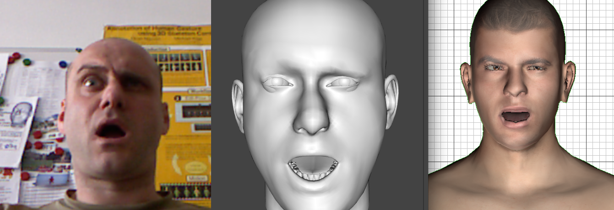
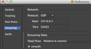
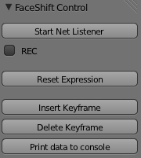

FaceShift 2 Blender
Fabrizio Nunnari <fabrizio.nunnari@dfki.de>
FaceShift 2 Blender is a Blender addon to edit the facial expression of a MakeHuman character using a Kinect-like device and the output of the FaceShift expression recognition software.

The
following picture shows the Kinect color camera detected face (left),
the FaceShift 3D model (center), and the piloted MakeHuman face in
Blender (right).
Use the standard Blender addon installation procedure: menu -> File -> User Preferences -> Addons (tab) -> Install from File...
Or copy paste the script text into a script a script buffer and execute it.
First, configure FaceShift to broadcast the captured data as UDP packets to localhost, port 33433.
Run FaceShift in Tracking mode.
WARNING! Live streaming can be performed ONLY with FaceShift Studio version. The (cheaper) Freelance version allows data streaming only of recorded performances, not for live tracking.

Open Blender and load any MakeHuman character. Enable the FaceShift2Blender plugin, or copy the code into a script buffer and run it.
A control panel will appear on the Tool box of the 3D View.
Select the character on which you want to operate.
Click “Start Net Listener” to enter a modal mode where the character face will be piloted by the FaceShift incoming data.
Press ESC to interrupt the reception and leave the face in its current position.
If REC if enabled, keyframes will be added to the timeline to record the current live performance. The timeline will advance (even though the time cursor is not visible during recording). The list of controls that are actually recorded is reported later.
Recording can also be enabled/disabled during message reception hitting the SPACE key.
Reset Expression will bring back the face to its “neutral” condition (all controls at zero offset).
Insert Keyframe can be used to insert a keyframe for all controls at the current frame on the timeline.
Delete Keyframe will delete the keyframe for the controls, if any.
Print data to console is used for development only…
Here the MakeHuman controls used by the addon to animate Head, Face and Eyes:
Blendshape controls: PBrows, PBrow_R, PBrow_L, PUpLid_R, PUpLid_L, PLoLid_L, PLoLid_R, PNose, PCheek_L, PCheek_R, PUpLipMid, PUpLip_R, PUpLip_L, PMouth_R, PMouth_L, PLoLip_R, PLoLip_L, PLoLipMid, PMouthMid, PJaw
For Head/Jaw rotation: Neck, Jaw
For eyes control: Gaze
Other Controls: Mhsmouth_retraction